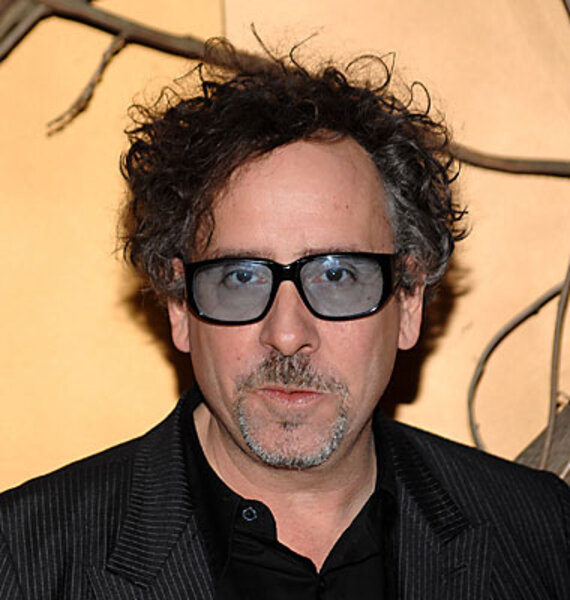
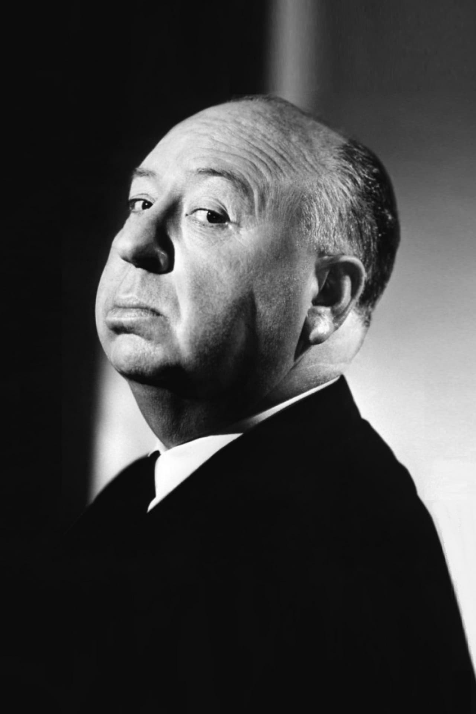
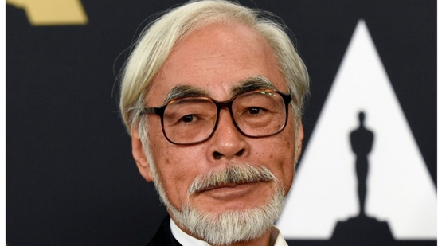

A continuació, un recull d'alguns dels directors més influents en la història del cinema:
Tim Burton

Nom complet: Timothy Walter "Tim" Burton
Vida: 1958 - Actualitat
Nacionalitat: Estatunidenc
Premis destacats: 2 nominacions als Òscars a millor pel·lícula animada, 1 Globus d'Or a millor director
Estil: Gran influència de l'impressionisme alemany i del surrealisme, pel·lícules de terror gòtic i fantasia fosca
Pel·lícules més reconegudes:
- Edward Scissorhands
- Charlie and the Chocolate Factory
- Beetlejuice
- Corpse Bride
- Batman Returns
Veure més
David Cronenberg

Nom complet: David Paul Cronenberg
Vida: 1943 - Actualitat
Nacionalitat: Canadenc
Premis destacats: 2 nominacions als Globus d'Or, Premi a Millor Pel·lícula al Festival de Cannes.
Estil: Pare del terror corporal
Pel·lícules més reconegudes:
- The Fly
- A History of Violence
- The Dead Zone
- Crash
- Eastern Promises
Veure més
David Fincher
Nom complet: David Andrew Leo Fincher
Vida: 1962 - Actualitat
Nacionalitat: Estatunidenc
Premis destacats: 40 nominacions als Òscars i 9 premis de l'acadèmia
Estil: Meticulositat mil·límètrica en els plans de càmera, narratives centrades en el thriller psicològic
Pel·lícules més reconegudes:
- Fight Club
- Seven
- The Game
- The Curious Case of Benjamin Button
- Gone Girl
Veure més
Alfred Hitchcock

Nom complet: Alfred Joseph Hitchcock
Vida: 1899 - 1980
Nacionalitat: Britànic - Estatunidenc
Premis destacats: 5 nominacions a millor director als Òscars, 2 Globus d'Or
Estil: pioner del thriller psicològic, gran pes de la perspectiva i l'ús de la càmera subjectiva
Pel·lícules més reconegudes:
- Psycho
- Vertigo
- The Birds
- Rebecca
- Notorious
Veure més
Hayao Miyazaki

Nom complet: Hayao Miyazaki (宮崎 駿)
Vida: 1941 - Actualitat
Nacionalitat: Japonès
Premis destacats: 3 Òscars, 1 Globus d'Or, 2 Premis BAFTA
Estil: pel·lícules dibuixades a mà amb paisatges vibrants, presència de dissenys mecànics i personatges expressius
Pel·lícules més reconegudes:
- Spirited Away
- My Neighbor Totoro
- Princess Mononoke
- Kiki's Delivery Service
- Howl's Moving Castle
Veure més
Martin Scorsese

Nom complet: Martin Luciano Scorsese
Vida: 1942 - Actualitat
Nacionalitat: Estatunidenc
Premis destacats: 1 Òscar i 7 nominacions a millor director
Estil: narratives no líneals, gran detall de l'època representada, trama enfocada a l'estudi intern dels personatges
Pel·lícules més reconegudes:
- Taxi Driver
- Raging Bull
- Goodfellas
- The Departed
- Casino
Veure més
Quentin Tarantino

Nom complet: Quentin Jerome Tarantino
Vida: 1963 - Actualitat
Nacionalitat: Estatunidenc
Premis destacats: 2 Òscar a millor guió original i 3 nominacions a millor director
Estil: Ús de seqüències no líneals, molta violència explícita, experimentació amb diversos gèneres
Pel·lícules més reconegudes:
- Pulp Fiction
- Inglourious Basterds
- Kill Bill
- Reservoir Dogs
- The Hateful Eight
Veure més